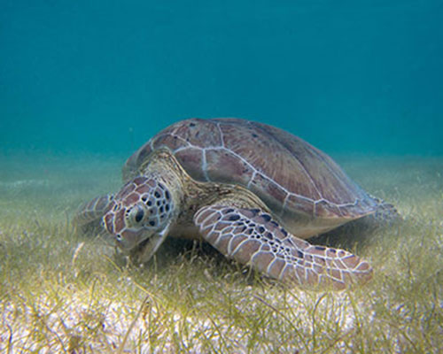
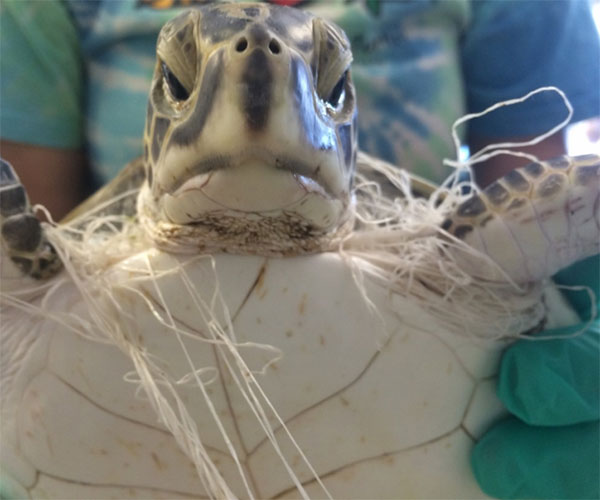
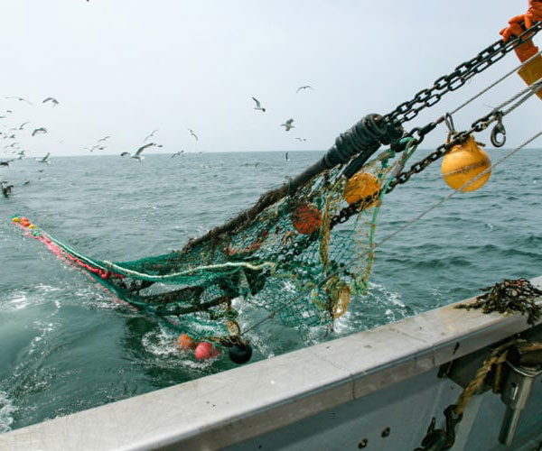
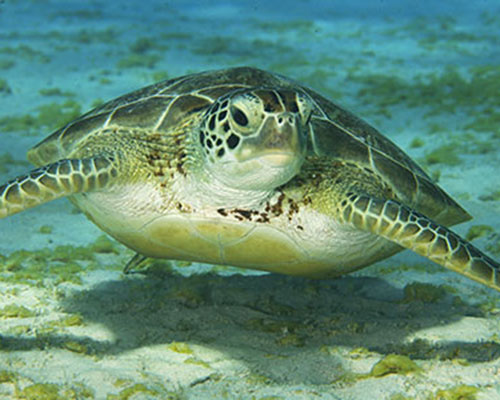

Sea Turtles
The ocean faces significant environmental concerns, with pollution and excessive fishing being two of the most harmful issues. As these issues worsen, they contribute to the loss of biodiversity and threaten the health of the ocean, which is vital for regulating the planet's climate and supporting human livelihoods.
- Plastic pollution is a major concern, as turtles often mistake plastic for food, leading to fatal ingestion or entanglement in discarded fishing gear. Chemical pollutants from oil spills and runoff also degrade their habitats, affecting their health and survival.
- Excessive fishing disrupts the marine food chain, indirectly threatening turtles by reducing their food sources and leading to accidental capture as bycatch.
- Additionally, the destruction of coastal nesting habitats due to human activity further endangers their populations.
These threats combined have contributed to a significant decline in sea turtle numbers, making it crucial to address each of these issues to protect this marine species.

6 out of 7 species of sea turtles are endangered today from habitat loss, pollution, climate change, and illegal poaching for their eggs, meat, and shells.Hot Issue
Pollution

Pollution significantly impacts sea turtles, primarily through plastic waste and chemical contaminants. Sea turtles often mistake plastic bags for jellyfish, one of their main food sources, leading to ingestion that can block their digestive systems, causing starvation or death.
Excessive Fishing

Overfishing severely impacts sea turtles, both by disrupting their food sources and through bycatch. Many sea turtles rely on fish, jellyfish, and other marine species for food, and when fish stocks are depleted due to excessive fishing, turtles struggle to find adequate amounts of food to survive.
Destruction of Habitats
The destruction of sea turtle habitats due to human activity, particularly along coastal areas, has devastating effects on their populations. Coastal development, such as the construction of hotels, roads, and resorts, often destroys or disturbs important nesting beaches, reducing the availability of safe sites for females to lay eggs.
Sea turtles are ancient mariners, having existed for over 100 million years, making them one of the oldest living species on Earth. Unfortunately, all species are currently threatened or endangered due to habitat loss, pollution, and climate change, highlighting the urgent need for conservation efforts to protect these remarkable reptiles.

Sea Turtles have many unique traits such as:
- They are also known for their incredible migration journeys, with some species traveling thousands of miles between feeding and nesting sites—leatherback turtles, for example, can cross the entire Pacific Ocean.
- Sea turtles use the Earth's magnetic field to navigate these long distances, like an internal GPS!
- Sea turtles can hold their breath for up to five hours underwater, but typically stay submerged for shorter periods while resting or diving for food.
- Leatherback sea turtles are the largest species, growing up to 7 feet long and weighing over 2,000 pounds.